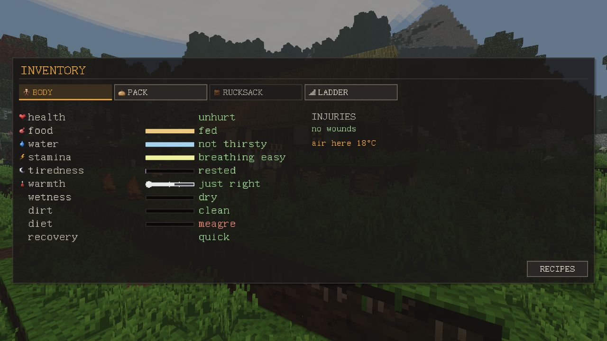
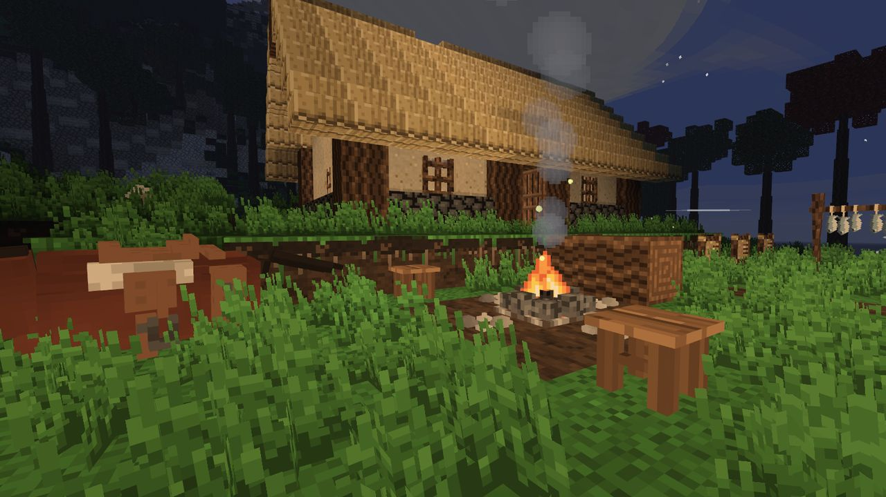
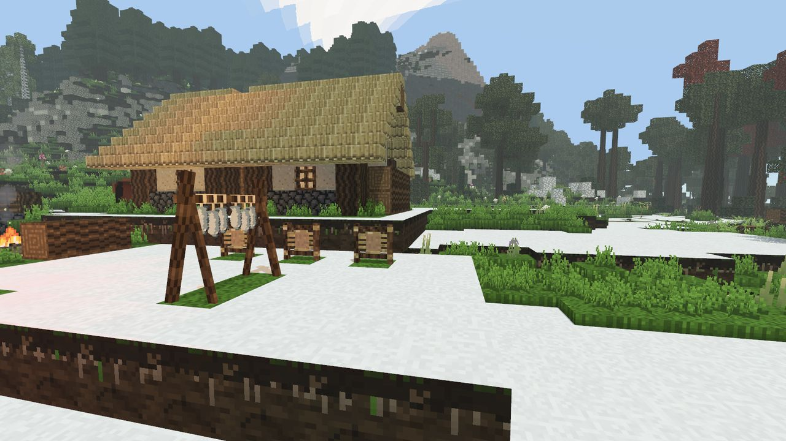
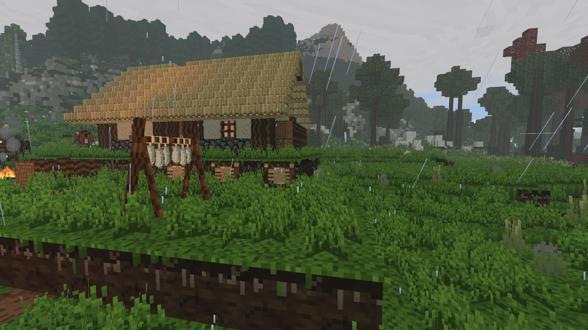

Выживание и тело
Тело не знает себя в процентах, и игра тоже: она говорит состояниями.
Как читать тело
Справа внизу три полоски: вода, выносливость и сытость. Вкладка ТЕЛО в инвентаре показывает всё остальное полоской и словом: здоровье, сытость, воду, дыхание, усталость, тепло, мокроту, грязь, разнообразие еды и восстановление, а ещё список ран и того, что нужно каждой. Если хотите числа вместо слов, включите в настройках ПОДРОБНЫЕ ЦИФРЫ.

Еда
Еду сжигает работа, а не время. Стоя на месте, вы опустошили бы полоску минут за сорок; опустошают её копание, бег и прыжки. Пустая полоска убивает не сразу, и порядок здесь важнее чисел:
- Ниже примерно 70% раны перестают закрываться. На этой отметке полоска темнеет.
- На нуле вы слабы, но живы: удары на четверть слабее, дыхание восстанавливается на треть медленнее, а на холоде вам на четыре градуса холоднее.
- Здоровье начинает уходить только через четыре игровых дня без еды.
Одним собирательством не прокормиться. Ягодный куст встречается редко, а плодоносит снова только через три игровых дня. Кормят охота, огонь, сушилка и поле.
| Еда | Сытность | Заметка |
|---|---|---|
| Ягоды | 2 | |
| Сырое мясо | 2.5 | болезнь на 45 секунд |
| Сырая рыба | 2 | |
| Вяленое мясо | 7 | хранится долго |
| Хлеб | 8 | черствеет за четыре дня |
| Жареная рыба | 8 | |
| Жареное мясо | 10 | |
| Похлёбка | 12 |
Еда портится. Сырое мясо хранится день, жареное — два; потом стопка гниёт. Холод сохраняет: при нуле и ниже ничего не стареет, а от 0 до 12° всё стареет вдвое медленнее. Погреб, выкопанный на несколько блоков в землю, держит среднюю за год температуру. Сухая еда (зерно, мука) не портится никогда. Стопки разного возраста лежат в разных ячейках.
Вода
Пустая полоска воды — это три стадии, и считаются они в игровых днях, а не полминуты до смерти:
- Жажда: дыхание восстанавливается медленнее.
- Слабость, после половины дня без воды: вы ходите медленнее, бьёте слабее, хуже заживаете.
- Обморок, после дня с четвертью: вы падаете, и поднять вас может только питьё.
Любой глоток прекращает всё это. Пейте проточную воду; о прудовой и морской см. Первые шаги. Кувшин несёт одну меру воды и помнит, какая она.
Выносливость
Бег, прыжки, копание, удары и броски тратят выносливость. Полной полоски хватает примерно на 22 секунды бега или дюжину прыжков; с пустой не прыгнуть вовсе. Она восстанавливается, пока вы стоите, и медленнее, если вы несёте много. Обессилев, копать всё равно можно, вдвое медленнее. Бежать можно только вперёд или наискось вперёд; назад и вбок — только шагом.
Холод, укрытие и огонь
Ночи холодные, и хуже всего час перед восходом. На стартовом лугу ночь под открытым небом без одежды к утру доводит до дрожи и вдвое ускоряет голод; осенью и зимой она переходит черту, за которой уходит здоровье.
- Открытое небо: вся ночь ваша.
- Крыша: любой непрозрачный блок над головой не выше 16 клеток (листва не считается). Убирает половину ночного холода и весь дождь.
- Комната: крыша и стены высотой не меньше двух блоков с трёх сторон из четырёх, не дальше трёх клеток. Убирает четыре пятых ночи. Четвёртой стороной может быть дверь.
- Огонь внутри стен греет всю комнату в пределах пяти клеток в любое время года. Тот же огонь под открытым небом греет только круг вокруг себя.


Одежда, шерсть и дождь
Одежда греет настолько, насколько она суха: мокрая одежда не греет. Дождь промачивает постепенно, и каждая одежда держит его по-своему:
- Шерсть — самое тёплое, что можно надеть, и пропускает почти весь дождь. Сухая — ответ северу; промокшая почти ничего не стоит. Перейти холодный край в шерсти — это план, а не цифра.
- Кожа греет меньше и долго не пропускает дождь.
- Мех (капюшон и накидка, сшитые руками из свежих шкур и жил одного зверя в день, когда вы его убили) теплее кожи, холоднее шерсти и тяжёл.
- Ткань (из хлопка) — единственная одежда, в которой на солнце прохладнее, чем с голой кожей.
Вброд мокнут только ноги; вплавь вы промокаете насквозь сразу. Сохнут у огня и на солнце. Вещи в инвентаре тоже мокнут: мокрые палки, волокно, брёвна и уголь не загорятся, мокрый факел не зажжётся, мокрая мука плесневеет. Минута у огня сушит весь инвентарь.

Жара
В саванне и пустыне полуденное солнце добавляет к воздуху до четырнадцати градусов. Если с восхода стоять в открытой пустыне, к десяти вам будет жарко, к половине двенадцатого начнётся перегрев, и с этого момента уходит здоровье. Любая крыша или крона дерева убирает солнце полностью. Вода охлаждает втрое быстрее воздуха. Идите утром и вечером, а в полдень стойте под деревом.
Раны
| Рана | Откуда | Что делает | Лечение |
|---|---|---|---|
| Порез | укус волка, клык кабана, когти, клинки | кровоточит; пока течёт кровь, здоровье не возвращается | неглубокий закрывается сам; глубокому нужен бинт |
| Ушиб | тупые удары, падающие блоки, жёсткие приземления | сам по себе ничего, но ушибленная конечность ломается от следующего сильного удара | проходит за пару минут |
| Перелом | долгое падение, медведь | нога: медленно, бежать нельзя; рука: удары и копание вполсилы | шина; без неё не заживает никогда |
| Ожог | стояние в огне | сильный не даёт здоровью возвращаться | припарка или бинт |
| Вещь | Рецепт (руками) |
|---|---|
| Бинт | 3 волокна (или 1 ткань → 3 бинта) |
| Шина | 2 палки + 2 волокна |
| Припарка | трутовик + волокно |
Чтобы перевязать рану, откройте инвентарь, возьмите бинт, шину или припарку и щёлкните по части тела на фигуре. Части, которым это поможет, подсвечиваются зелёным. Перевязанные раны заживают постепенно, а во сне — вшестеро быстрее. Капля крови рядом с полоской здоровья значит, что вы истекаете кровью; кость — что-то сломано.
Падения: с трёх блоков — ничего, с шести — царапина, с двенадцати — половина здоровья, с восемнадцати — всё. Полный инвентарь делает падение почти вдвое опаснее. Вода спасает, только если она глубокая: четыре блока и больше принимают всё падение.
Вес ноши
| Ноша | Что даёт |
|---|---|
| до 25 кг | легко, не чувствуется |
| 25–40 кг | тяжело: чуть медленнее, дыхание уходит быстрее |
| 40–70 кг | очень тяжело: только шагом, ни бега, ни прыжков |
| 70–110 кг | еле двигаетесь: дюжина шагов, потом отдых |
| больше 110 кг | с места не сдвинуться, пока что-нибудь не бросите |
Надетое тоже считается. Рюкзак (8 кожи + 4 верёвки + 2 обработанных древка руками или 6 кожи на кожевенном столе) добавляет двадцать ячеек; носите его в квадрате спины. Снять его, пока в нём что-то лежит, нельзя.
Без сил, смерть и путь назад
Когда здоровье кончается, вы обычно падаете, а не умираете. На экране идёт обратный отсчёт и написано, что вас поднимет: бинт от раны, шина от сломанных ног, тепло от холода, еда от голода, питьё от жажды. Можно медленно ползти. Друг может поднять вас, щёлкнув по вам правой кнопкой с нужной вещью. R — сдаться.
После смерти всё, что вы несли, остаётся в вашем теле там, где вы упали, включая надетое. Тело хранит всё два дня (на холоде дольше); потом от него остаются кости, а мягкая половина содержимого (еда, кожа, мех, шерсть, ткань, волокно, верёвка, шкуры, жилы) пропадает. Металл, камень, кремень, кость, обожжённая глина и дерево остаются. Если у вас есть карта, места ваших смертей отмечены на ней.